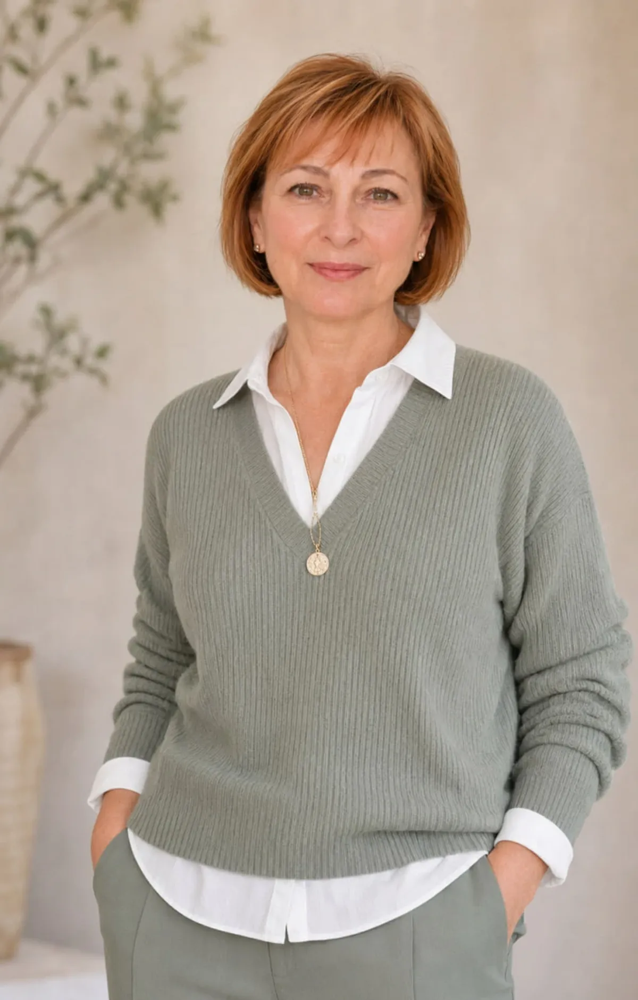
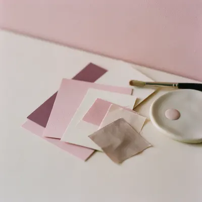
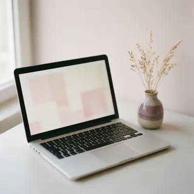
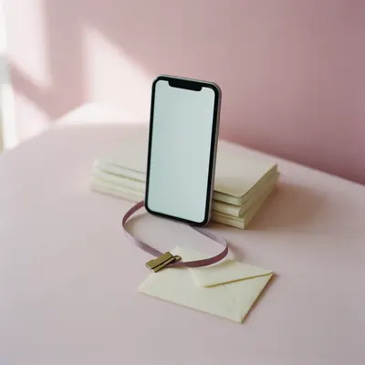
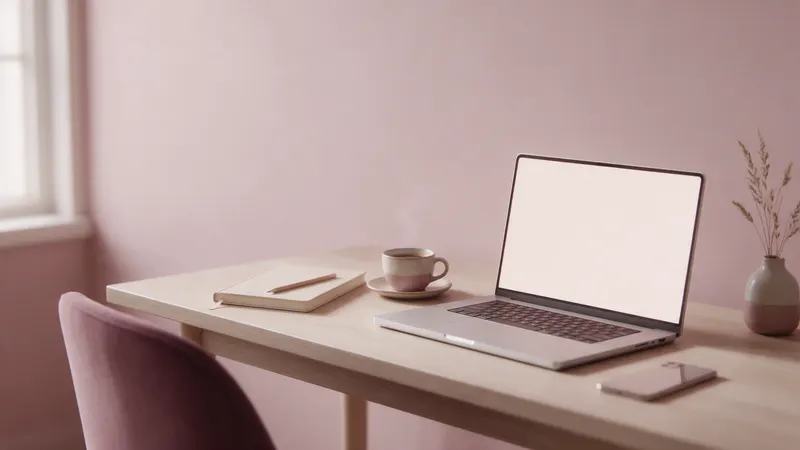
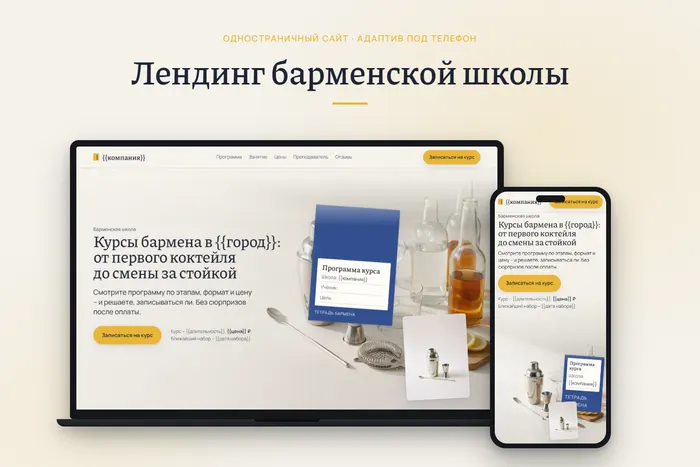
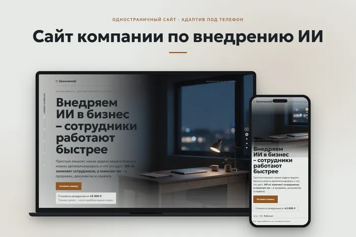
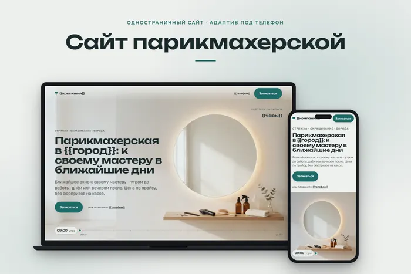
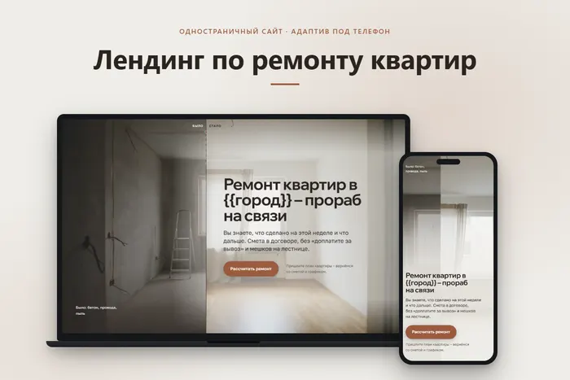
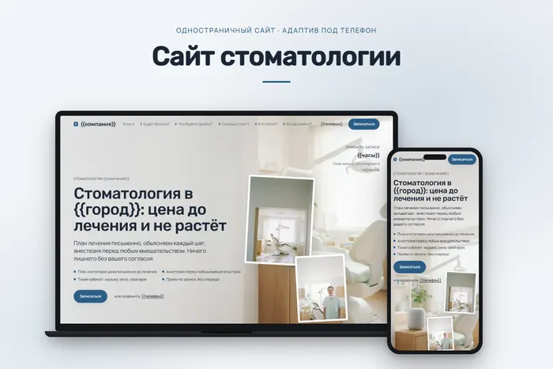

Сайты, контент и простые автоматизации с ИИ для экспертов
Из ваших записей, заметок и презентаций собираю готовые посты, статьи, изображения и небольшие сайты. Можно начать с одной задачи.
Чем могу помочь
Небольшие сайты и лендинги для экспертов с помощью ИИ, контент из готовых материалов, простые автоматизации Telegram и рабочих процессов. Можно заказать одну услугу или сочетание нескольких.
Контент по вашим материалам
Посты, статьи и контент-планы по вашим заметкам, записям занятий и презентациям. Использую ИИ как рабочий инструмент, а итоговый текст проверяю, редактирую и сверяю с вашими материалами.
Изображения для контента и сайта
Обложки, иллюстрации и карточки в едином стиле, созданные с помощью ИИ. Изображения реальных людей делаю только с их согласия.

Небольшие сайты и лендинги
Одностраничный сайт: описание услуг, примеры работ, контакты. Проверяю отображение на телефоне и помогаю с публикацией.

Автоматизация повторяющихся задач
Простые сценарии: данные из таблиц и документов попадают туда, где они нужны, например в Telegram-канал. Начинаем с одного сценария.

Не берусь за сложные системы и интернет-магазины, не даю гарантий по продажам и охватам.

Как проходит работа
Вы описываете задачу своими словами и присылаете материалы. Я показываю первый вариант, вы отправляете правки, я их вношу.
Иллюстрация, не реальная переписка.
ВыЗдравствуйте! У меня есть записи занятий. Нужны посты для канала.
ЯЗдравствуйте! Пришлите записи, подготовлю первый вариант.
ДальшеВы смотрите черновик и присылаете правки. Я их вношу и передаю готовое: тексты, изображения, сайт или настроенный сценарий, и объясняю, как ими пользоваться.
Примеры работ
Демо-сайты для разных ниш: так могут выглядеть страницы ваших услуг.

Барменская школа · демо-сайт
Задача: Лендинг барменской школы.
Сделано: программа по этапам в виде тетради, цены и расписание, запись в Telegram, адаптация под телефон.

Внедрение ИИ в бизнес · демо-сайт
Задача: Одностраничный сайт компании по внедрению ИИ.
Сделано: структура, тексты, визуальное оформление, адаптация под телефон.

Парикмахерская · демо-сайт
Задача: Одностраничный сайт парикмахерской с записью к мастеру.
Сделано: структура, тексты, визуальное оформление, адаптация под телефон.

Ремонт квартир · демо-сайт
Задача: Одностраничный сайт компании по ремонту квартир.
Сделано: структура, тексты, визуальное оформление, адаптация под телефон.

Стоматология · демо-сайт
Задача: Одностраничный сайт для клиники.
Сделано: структура, тексты, визуальное оформление, адаптация под телефон.
Реальные проекты
Сайт с рецептами
«Готовим с Васей по-быстрому».
Задача: собрать удобную домашнюю книгу рецептов.
Сделано: структура, карточки рецептов, поиск, разделы и публикация сайта.
Открыть сайтПубликация в Telegram из таблицы
Задача: публиковать посты в Telegram-канале из Google Таблицы.
Сделано: сценарий в n8n: новая строка в таблице запускает публикацию поста. Проверено на тестовом канале.
Частые вопросы
Можно ли прийти без технического задания?
Да. Опишите задачу своими словами и пришлите то, что уже есть: записи, заметки, презентации. Остальное уточним в переписке.
Что нужно прислать для начала?
Три вещи: что нужно сделать, для кого это и какие материалы уже есть (записи, заметки, фото).
Можно ли заказать только одну услугу?
Да. Можно заказать одну услугу или сочетание нескольких, а начать с одной небольшой задачи.
Сколько правок входит?
Я показываю первый вариант, вы присылаете правки одним сообщением, я их вношу. Количество кругов правок согласуем до начала работы.
Как определяется стоимость?
Стоимость и сроки обсуждаем после знакомства с материалами: так виден объём работы.
Опишите задачу своими словами
Стоимость и сроки обсуждаем после знакомства с материалами.
Написать в Telegram